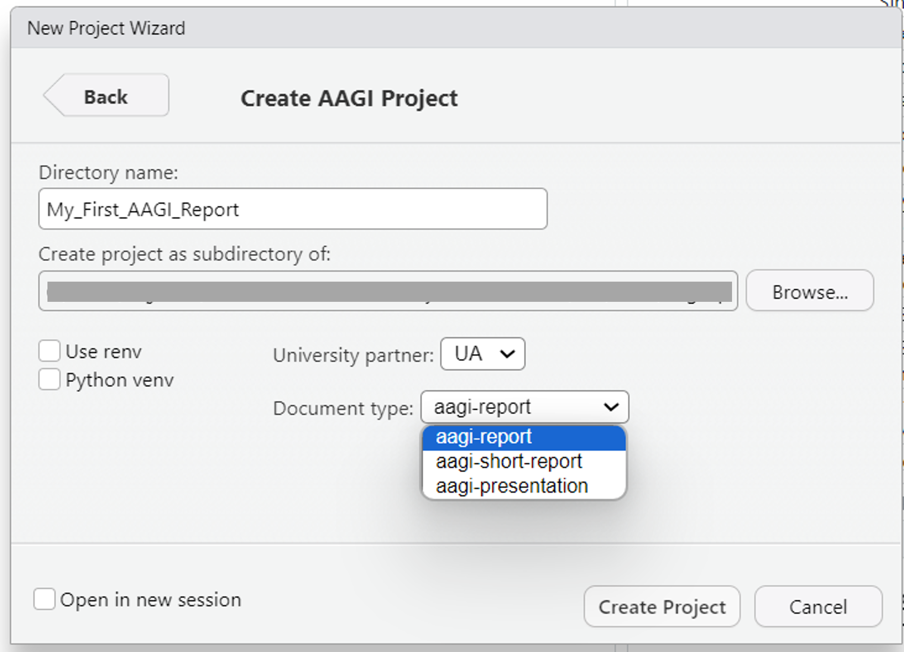
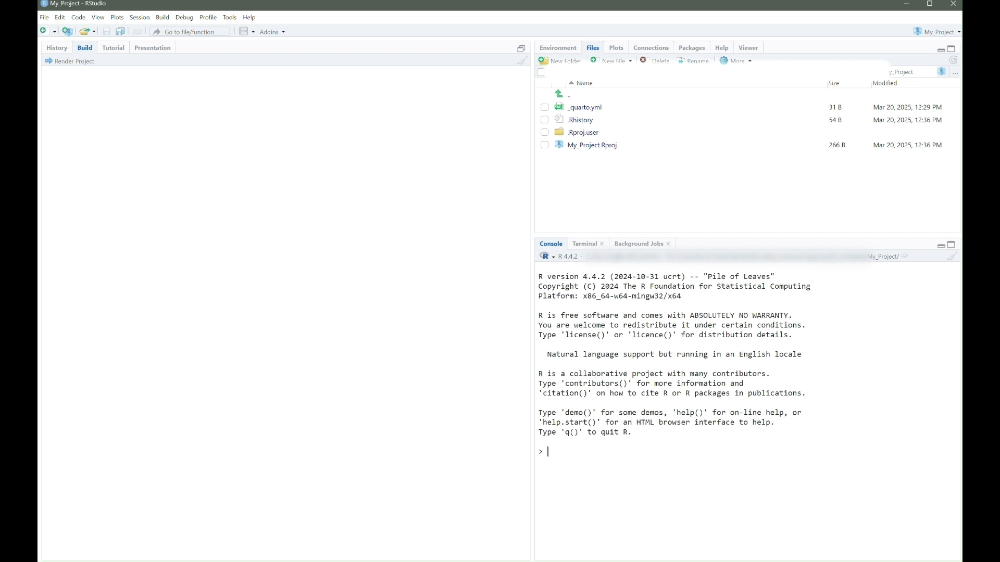

The goal of AAGIQuartoExtra is to make use of AAGI Quarto templates a bit easier. It provides convenience functions to create AAGI Quarto projects and update current projects with the most recent templates.
Installation
You can install the development version of AAGIQuartoExtra from GitHub with:
# install.packages("remotes")
remotes::install_github("AAGI-AUS/AAGIQuartoExtra")Create a new AAGI quarto project
In RStudio, you can create a new AAGI Quarto document by clicking on File -> New Project... -> New Directory -> AAGI Project. This will create a new AAGI project with the basic structure and template files.

You will be prompted to enter the name of the project, the university partner, and the type of document you want to create (*aagi-report and aagi-short-report are available as of latest release version). The project will be created as a subdirectory in the specified working directory.
If you are familiar with projects environments, you also have the options to set renv and python virtual environments in the project.

When your AAGI project is created, you will notice that the new index.qmd file is created with the title of the project. This is the main document where you will write your content. You will notice that it includes some example content to get you started.

You can also open the index.qmd file in the Visual Editor by clicking on the Visual button in the RStudio toolbar. This will open the document in the Visual Editor where you can see a live preview of your document as you write.

Now, to convert the index.qmd file to a PDF and Word document, you can click on Build -> Render Project in the RStudio toolbar. This will render the document to PDF and Word formats and save them in the project directory as index.pdf and index.docx.

If everything is set up correctly, you should see the rendered PDF and Word documents in the project directory. You can open these files to see the final output of your document.

Create a new AAGI quarto document
You can also create a new AAGI Quarto document by running the new_aagi_document() function in the R console. This function will create a new AAGI Quarto document in the current working directory.
AAGIQuartoExtra::new_aagi_document()